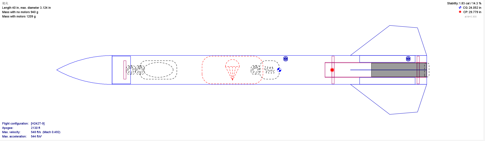

初火
Go to the NAR Website to see details about level 1 motor certification flights.

About Hatsuhi
Hatsuhi was my Level 1 Certification Rocket.
Furthermore, it is the first rocket I designed and built entirely myself, instead of as part of NCSSM HPR. I'm extremely proud of how well it turned out, and it's given me confidence to look towards more complicated designs in the future.
It flew twice: my certification flight in Virginia, and a camera-carrying flight in Dalzell, SC. The first flight was successful, both launching and landing without any issue. The second flight launched perfectly, but I lost sight of it mid-flight and could not find it afterward. True to it's name "First Fire" refused to fly again.
Launches
Culpepper, VA
H130-W
This was my Level 1 Certification launch.
It flew well and landed undamaged, despite winds so heavy they blew over our canopy.
Certification complete!
Dalzell, SC
H242-T
This launch was where Hatsuhi went missing.
I used a stronger motor due to the extra payload mass and concerns about launch rail velocity.
However, it went too high, and everyone lost sight of the rocket.
Construction
Hatsuhi was a 3in cardboard rocket, 40in in length with a 3D-printed nosecone. It had a 38mm motor mount and flew with a 24in diameter parachute, deployed where the body met the nosecone. The fins and centering rings were laser-cut 1/4in birch plywood, epoxied onto the cardboard body tube. The motor retainer was an aluminum Aerotech, screw-on retainer, attached with JB-weld.
The most notable component of Hatsuhi's construction was the nosecone, which was 3D-printed in two halves. Each half had depressions for alignment dowels and the 2in plywood bulkhead. I inserted the dowels and bulkhead (where the I-bolt for the shock cord sat), into the nosecone halves, before epoxying them together. This ensured the layer lines ran parallel to the primary axis of force. Furthermore, the wood distributed the force more evenly across the much weaker plastic. The result was a sturdy nosecone with the design flexibility 3D-printing allows.
Payloads
Hatsuhi's only payload was an externally mounted key-fob camera for the Dalzell launch. Since the rocket wasn't recovered, this recording is lost.